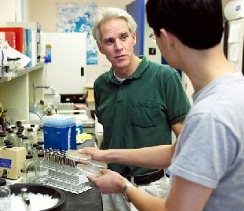

| James F. Curran | @ |
| Professor of Biology
B.A., University of Delaware 108 Winston Hall |
 |
Areas of Interest Molecular Mechanisms of Protein Synthesis, Gene Regulation, Nucleic Acid Chemistry, Microbial Evolutionary Mechanisms |
|
Research The ribosomal translation of the genetic code is a fundamental biological process. Cells are composed mostly of protein, and cellular well-being depends on the accurate and efficient production of that biomass. In addition, there are specific mRNA sites in which errors occur at very high frequencies to generate active proteins. For example, a very high frequency frameshift occurs at a specific site in the AIDS virus mRNA. If we could prevent this "programmed frameshift," then the AIDS virus could not propagate. We have ongoing projects that explore the molecular mechanisms of programmed frameshifting, regulation of the RNA polymerase genes of E. coli, and the evolution of the genetic code. |
| Courses Taught
Microbiology, Genetics, Biochemistry, Molecular Biology, Microbial Pathogenesis and various graduate seminars in the molecular biosciences including gene expression, protein synthesis, the molecular biology of RNA, "molecular fossils," and molecular modeling. I also teach freshman seminars; one on the human genome, another on how biological and geographical factors have influenced human history, and a third on social and economic issues facing humanity in the 21st century. Selected Publications Lim, V.I., Curran, J.F. and Garber, M. (2005). Ribosomal elongation cycle: Energetic, Kinetic and Stereochemical aspects, Journal of Molecular Biology 351, 470-480. Curran, J.F. (2003). Death, Taxes, and the Genetic Code? Chemistry & Biology 10:1-2. Lim, V.I. and Curran, J.F. 2001. Analysis of Codon:Anticodon Interactions within the Ribosome Provides New Insights into Codon Reading and the Genetic Code Structure. RNA 7, 942-957. Wu, L., and Curran, J.F. 1999. An allosteric synthetic DNA. Nucleic Acids Research 27: 1512-1516. Tsai, F., and Curran, J.F. 1998. tRNA2Gln mutants that translate the CGA arginine codon as glutamine in Escherichia coli. RNA 4: 1514-1522. Curran, J.F. 1998. Modified Nucleosides in Translation, chapter 27 in Modification and Editing of RNA: The Alteration of RNA Structure and Function, H. Grosjean, and R. Benne, eds. American Society for Microbiology Press, pp. 493-516. Qian, Q., Curran, J.F., and Bjork, G.R. 1998. The N6-methyl group of the modified nucleoside N6-methyl-N6-threonylcarbamoyladenosine (m6t6A) in transfer RNA of Escherichia coli improves translational efficiency, Journal of Bacteriology 180: 1808-1813. Li, J.-n., Esberg, B, Curran, J.F., and Bjork, G.R. 1997. Three modified nucleosides present in the anticodon stem and loop influence the in vivo aa-tRNA selection in a tRNA-dependent manner. Journal of Molecular Biology 271: 209-221. Schwartz, R. and Curran, J.F. 1997. Analyses of frameshifting at UUU-pyrimidine sites, Nucleic Acids Research 25, 2005-2011. Curran, J.F. 1995. Decoding with the A:I base pair is inefficient. Nucleic Acids Research 23, 683-688. Recent Op-Ed Articles: |
Return to list of Biology Faculty